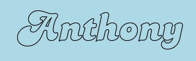
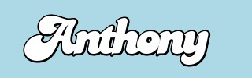
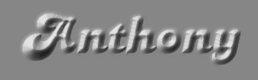
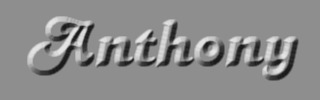
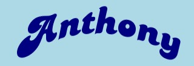
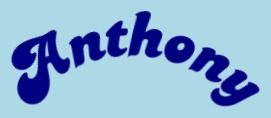
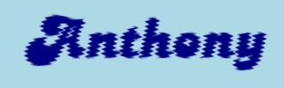
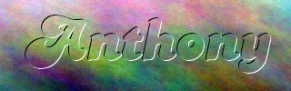
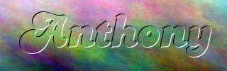
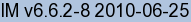

- Index
 ImageMagick Examples Preface and Index
ImageMagick Examples Preface and Index
 Compound Fonts
Compound Fonts
 Drawing text as images in various styles
Drawing text as images in various styles
-
Tile Filled,
Gradient Filled,
Upside-Down,
Hard Shadow,
Sheared Shadow,
Slanted,
Stamp,
Extruded,
Outline,
Multi-color Outline,
Stroke,
Thick Stroke,
Thin Stroke,
Double Outline,
Psychedelic,
Balloon,
Joined,
Overlapped,
Jittered,
Fuzzy,
Fuzzy Shadow,
Soft Shadow,
Soft Outline,
Denser Soft Outline,
Distance Blurred Shadow,
Dirty Print,
Bevel,
Conical,
Inner Bevel,
Arch,
Arc,
Circle,
Vibrato,
Comet,
Smoking.
- Using a Mask Image with Fonts
To remove parts of an image, before overlay
- Advanced Font Processing
Expanding fonts to produce more complex results
-
More Complex Fonts,
Neon Sign,
Metallic
Drawing text is only the start of what is possible with ImageMagick. Here we
look at modifying the basic text drawing ability of IM to create fancy fonts
and special effects, which you can then use on your web pages and documents.
Compound Font Effects
Plain old text as images is boring, but with very little effort you can
overlay and color text so as to produce some very weird and wonderful
effects.
To do this we need to draw text multiple times, overlay different tiles and
colors, and apply some of the many image operators available to generate
more interesting special effects from the original, boring text.
Note that many of these effects can be applied to other images besides a basic
font such as we are using. In particular you can use the effects on clip-art
images.
Tiled Font: You are not limited to drawing fonts in a fixed color.
You can use a tile pattern over the font.
magick -size 320x100 xc:lightblue -font Candice -pointsize 72 \
-tile pattern:checkerboard -annotate +28+68 'Anthony' \
font_tile.jpg
|
Note that the "
-tile"
setting overrides any "
-fill" color for the "
-draw" operator.
 |
As of IM v6.3.2 you can specify a tile image using the "-fill" setting instead, This
usage is however is not recommended as many operators that using the
"-fill" color will not
understand a tiling image, and default to using 'black' instead.
|
The tiling image can be offset relative to the background image origin by
specifying a "
-origin"
setting, BEFORE you set the "
-tile" image. The image is rolled by the amount specified during
its assignment as the fill tile.
Gradient Font: The tile used does not have to be small either, but
can be the size of the whole canvas.
magick -size 320x100 xc:lightblue -font Candice -pointsize 72 \
-tile gradient: -annotate +28+68 'Anthony' \
font_gradient.jpg
|
Upside Down Font:
magick -size 320x100 xc:lightblue -font Candice -pointsize 72 \
-fill Navy -annotate 180x180+300+35 'Anthony' \
font_upsidedown.jpg
|
![[IM Output]](font_upsidedown.jpg)
Hard Shadow: Drawing the font twice with an offset, you can make a
simple 'hard' shadow effect.
magick -size 320x100 xc:lightblue -font Candice -pointsize 72 \
-fill black -draw "text 28,68 'Anthony'" \
-fill white -draw "text 25,65 'Anthony'" \
font_shadow.jpg
|
Sheared Shadow: As the "
-annotate" font drawing operator can rotate the vertical dimension
separately to the horizontal dimension, you can specify some odd ball rotation
'slewing' or 'shearing' of the font. This is great for making weird shadows,
or making your own italic or slanted font.
magick -size 320x115 xc:lightblue -font Candice -pointsize 72 \
-fill Navy -annotate 0x0+12+55 'Anthony' \
-fill RoyalBlue -annotate 0x130+25+80 'Anthony' \
font_slewed.jpg
|
![[IM Output]](font_slewed.jpg)
To see a table summarizing the effects of the text rotations, see
Annotate Text Option.
Of course the Candice font is not a good font to show this effect, and other
details may need to be added to make it the result look more 3D like. For
example
Blurring the shadow with distance.
Slanted Font: You can also use "
-draw" to slant your font too, though it is a little trickier, as
it involves extra MVG (Magick Vector graphics) actions, to warp the drawing
surface. As the surface is being warped it is a good idea to set the font
location first using '
translate' before warping.
magick -size 320x100 xc:lightblue -font Candice -pointsize 72 \
-fill Navy -draw "translate 28,68 skewX -20 text 0,0 'Anthony'" \
font_slanted.jpg
|
To see a table summarizing the effects of the text rotations, see
Annotate Text Option.
Of course the Candice font is not a good font to show this effect, and other
details may need to be added to make it the result look more 3D like. If you
come up with anything interesting, pass it on to me, so it can be shared with
the rest of the world.
 |
Both "-annotate" and
"-draw skew?" operations
actually rotates the X and Y axis of the drawing surface. This is different
from the effects of using "-shear" on an existing image, which lengthens the sheared axis
of the image so the height (or width) or the image does not change due to
the operation.
|
Stamped Font: By drawing the font three times in darker and lighter
and the original colors you can make a stamp like indent.
magick -size 320x100 xc:lightblue -font Candice -pointsize 72 \
-fill black -annotate +24+64 'Anthony' \
-fill white -annotate +26+66 'Anthony' \
-fill lightblue -annotate +25+65 'Anthony' \
font_stamp.jpg
|
![[IM Output]](font_stamp.jpg)
Notice how the last 'draw' of the font erases the middle portion of the font.
This can only be done on a solid colored background, See
Using a Mask Image to see how we can use this on a random background that
isn't a solid color.
If you swap the two colors you will of course get a raised font, instead of a
indented font.
Extruded or 3d block font: can be generated by repeating the font
multiple times.
magick -size 320x100 xc:lightblue -font Candice -pointsize 72 \
-fill gray -annotate +29+69 'Anthony' \
-annotate +28+68 'Anthony' \
-annotate +27+67 'Anthony' \
-annotate +26+66 'Anthony' \
-annotate +25+65 'Anthony' \
-annotate +24+64 'Anthony' \
-fill navy -annotate +23+63 'Anthony' \
font_extrude.jpg
|
![[IM Output]](font_extrude.jpg)
Note that this is NOT a simple shadow, but a proper thickening of the drawn
font.
This is very repetitive and can be used for any 'shaped' image. For another
example of this see
Adding Thickness to
a Thumbnail.
Outlined Font: We can create an outlined font using multiple
drawing with small position offsets.
magick -size 320x100 xc:lightblue -font Candice -pointsize 72 \
-fill black -annotate +24+64 'Anthony' \
-annotate +26+64 'Anthony' \
-annotate +26+66 'Anthony' \
-annotate +24+66 'Anthony' \
-fill white -annotate +25+65 'Anthony' \
font_outlined.jpg
|
![[IM Output]](font_outlined.jpg)
As this is also very repetitive, it is not a good outline solution.
As ImageMagick allows you to draw the font outline by setting the "
-stroke" setting, much better
solutions exist. (See the
Stroke Fonts below).
Regardless, multiple redraws like this, for generating an outline can be very
useful with pre-prepared clip-art images, such as what you can find all over
the Internet. It is also useful technique for other graphic libraries and
programs (Like "
GD" from "
PHP", etc) where a
"
-stroke" setting is not
available for use.
Another reason for showing this style of outlining, is that the result may be
better when outlining a font with very sharp points.
For example here we draw the font 12 times to show up the sharp points of the
font. The outline here was also drawn to be a little thicker.
magick -size 320x100 xc:lightblue -font Candice -pointsize 72 \
-draw "fill black text 27,67 'Anthony' \
text 25,68 'Anthony' \
text 23,67 'Anthony' \
text 22,65 'Anthony' \
text 23,63 'Anthony' \
text 25,62 'Anthony' \
text 27,63 'Anthony' \
text 28,65 'Anthony' \
fill white text 25,65 'Anthony' " \
font_outlined_12.jpg
|
![[IM Output]](font_outlined_12.jpg)
You will also notice that the drawing
-fill" color can be changed inside the "
-draw" argument.
Multi-Color Outline: The other reason this technique is useful is that
you are not limited to just one outline color in drawing the font. By
re-drawing the font 12 times in 5 different colors in a very carefully
designed sequence, you can make a colorful "raised" font, with some edge
color smoothing.
magick -size 320x100 xc:lightblue \
-font Candice -pointsize 72 -gravity center \
-draw "fill navy text 2,2 'Anthony' \
fill navy text 0,3 'Anthony' \
fill navy text 3,0 'Anthony' \
fill dodgerblue text 0,2 'Anthony' \
fill dodgerblue text 2,0 'Anthony' \
fill dodgerblue text -2,2 'Anthony' \
fill dodgerblue text 2,-2 'Anthony' \
fill lavender text -2,-2 'Anthony' \
fill lavender text 0,-3 'Anthony' \
fill lavender text -3,0 'Anthony' \
fill skyblue text 0,-2 'Anthony' \
fill skyblue text -2,0 'Anthony' \
fill blue text 0,0 'Anthony' " \
font_colourful.jpg
|
![[IM Output]](font_colourful.jpg)
There are better methods to create a raised font like this, but this works, is
simple, and only uses a few colors, rather that a whole range of colors.
Outline (Stroke) Font: The "
-stroke" setting allows you to draw an outline of the font
directly. Normally the stroke color is set to "none", so is not used. The
thickness of the stroke is varied with "
-strokewidth", which
defaults to a good value of 1.
magick -size 320x100 xc:lightblue -font Candice -pointsize 72 \
-fill white -stroke black -annotate +25+65 'Anthony' \
font_stroke.jpg
|
And here is an example with a heavier stroke width of 3.
magick -size 320x100 xc:lightblue -font Candice -pointsize 72 \
-fill white -stroke black -strokewidth 3 \
-annotate +25+65 'Anthony' font_stroke_3.jpg
|
![[IM Output]](font_stroke_3.jpg)
Notice how the stroke color eats away not only the outside of the font, but
the inside as well. For more detail see the results of my
Stroke and Stroke Width Options.
Thick Stroke: By again redrawing the font a second time, but without
the stroke turned on, the internal parts of the lines are removed, creating a
more pleasing thickly outlined font.
magick -size 320x100 xc:lightblue -font Candice -pointsize 72 -fill white \
-stroke black -strokewidth 5 -annotate +25+65 'Anthony' \
-stroke none -annotate +25+65 'Anthony' \
font_stroke_thick.jpg
|
Using the
-stroke" setting is
taken even further, in
Stroke and StrokeWidth
Options where is aspect of drawing operators are explored in greater
depth.
Thin Stroke: By turning off the fill color, you can leave just the
outline of the font.
magick -size 320x100 xc:lightblue -font Candice -pointsize 72 \
-fill none -stroke black -annotate +25+65 'Anthony' \
font_stroke_thin.jpg
|

Doubled Outline: By redrawing using multiple stroke thicknesses, you
can generate a double outline! The first draw can use any fill color to fill
the inside of the font, or left as none as we did here to leave the background
alone. However the last font draw must be with done with a fill setting of
"none", or it will not work.
magick -size 320x100 xc:lightblue -font Candice -pointsize 72 \
-fill none -stroke black -strokewidth 3 -annotate +25+65 'Anthony' \
-fill none -stroke white -strokewidth 1 -annotate +25+65 'Anthony' \
font_stroke_double.jpg
|
![[IM Output]](font_stroke_double.jpg)
Unlike the 'stamped font' previously, the above did not require the middle
part the of font to be erased. As such this will work on any background
without complication.
Psychedelic Font: In a similar way by slowly reducing the stroke width
size while swapping colors, a psychedelic outline effect can be easily
generated.
magick -size 320x100 xc:lightblue -font Candice -pointsize 72 -fill white \
-stroke black -strokewidth 25 -annotate +25+65 'Anthony' \
-stroke white -strokewidth 20 -annotate +25+65 'Anthony' \
-stroke black -strokewidth 15 -annotate +25+65 'Anthony' \
-stroke white -strokewidth 10 -annotate +25+65 'Anthony' \
-stroke black -strokewidth 5 -annotate +25+65 'Anthony' \
-stroke none -annotate +25+65 'Anthony' \
font_psychedelic.jpg
|
You can make it even more psychedelic by using clashing colors, different
stroke widths, or even moving the font position around a little. Experiment
and see what you can come up with.
Balloon Effect: Here I did exactly the same as the "Thick Stroke Font"
above, but purely by accident I used a white stroke color when re-drawing the
font. This resulted in an interesting enlargement of the font, with a thick
outline. The 'puffy' looking font is as if had been inflated like a balloon.
This just shows that it pays to experiment to see what you can find.
magick -size 320x100 xc:lightblue -font Candice -pointsize 72 \
-fill black -stroke black -strokewidth 5 -annotate +25+65 'Anthony' \
-fill white -stroke white -strokewidth 1 -annotate +25+65 'Anthony' \
font_balloon.jpg
|
![[IM Output]](font_balloon.jpg)
Joined Characters: By using a small negative
Character Space Kerning setting (adding IM v6.4.7-10) and drawing the
font twice (such as in the previous example), you can cause all the characters
in a 'thick' font join together, so as to produce an interesting variation.
magick -size 320x100 xc:lightblue -font Candice -pointsize 72 \
-kerning -6 -strokewidth 4 -fill white \
-stroke black -annotate +28+68 Anthony \
-stroke none -annotate +28+68 Anthony \
font_joined.jpg
|

Overlapped Characters: A variation on this however is to draw each and
every character separately so that each character is overlaid on top of the
previous characters.
magick -size 320x100 xc:lightblue -font Candice -pointsize 72 \
-stroke black -strokewidth 4 -fill white \
-stroke black -annotate +28+68 A -stroke none -annotate +28+68 A \
-stroke black -annotate +90+68 n -stroke none -annotate +90+68 n \
-stroke black -annotate +120+68 t -stroke none -annotate +120+68 t \
-stroke black -annotate +138+68 h -stroke none -annotate +138+68 h \
-stroke black -annotate +168+68 o -stroke none -annotate +168+68 o \
-stroke black -annotate +193+68 n -stroke none -annotate +193+68 n \
-stroke black -annotate +223+68 y -stroke none -annotate +223+68 y \
font_overlapped.jpg
|
![[IM Output]](font_overlapped.jpg)
This however requires you to work out (manually or automatically using a
script) the appropriate position for each character. The natural width of
each character can be determined by generating labels of each character
without any "
-strokewidth" setting. See
Determining Font Metrics for examples.
Note unlike when using the "
-kerning" setting (previous example) each characters position in
the above was adjusted artistically by different amounts rather than just some
simple fixed amount. For example, only a little overlap between the 't' and
the 'h', but a lot more overlay between the 'n' and 'y' characters.
Jittered Characters: if you go so far as drawing individual characters
(overlaping or not) then you can place them in a 'jitter' or randomized
pattern, particularly with different up-down offsets.
You can even take this to an extreme to generate a special effect such as...
magick -size 320x100 xc:lightblue -font Candice -pointsize 72 \
-stroke black -strokewidth 4 -fill white \
-stroke black -annotate +26+80 A -stroke none -annotate +26+80 A \
-stroke black -annotate +95+63 n -stroke none -annotate +95+63 n \
-stroke black -annotate +133+54 t -stroke none -annotate +133+54 t \
-stroke black -annotate +156+67 h -stroke none -annotate +156+67 h \
-stroke black -annotate +193+59 o -stroke none -annotate +193+59 o \
-stroke black -annotate +225+59 n -stroke none -annotate +225+59 n \
-stroke black -annotate +266+54 y -stroke none -annotate +266+54 y \
font_jittered.jpg
|
![[IM Output]](font_jittered.jpg)
Fuzzy Font: A straight spreading of a font color using "
-blur" operator. This operator
allows you to take an image and spread it out in all directions. This allows
you to generate softer looking shadows, and or spray paint like effects. The
following examples show the effects you can achieve with this.
magick -size 320x100 xc:lightblue -font Candice -pointsize 72 \
-fill navy -annotate +25+65 'Anthony' \
-blur 0x3 font_fuzzy.jpg
|
![[IM Output]](font_fuzzy.jpg)
Note that blur is applied to the WHOLE image at the point the operator is
given. If you want to use a blur an existing image, you will have to draw the
font separately (on a transparent background), then overlay it on the
background image.
|
The "-blur" (or
"-gaussian")
operator modifies a much larger area than you might suspect. If your
background canvas is not large enough you may get an error from these
operators. If this happens add extra space to the image, say using
"-border", or add a
limit to the working radius (first argument) of the operator.
Also the blurring of the image generally makes the use of "-trim" afterward fairly useless.
Manual trimming, or other adjustments may be needed whenever you use
blurring on an image.
|
Fuzzy Shadow: Use the fuzzy font as an offset for a soft shadow.
Note that we also used a larger spread value.
magick -size 320x100 xc:lightblue -font Candice -pointsize 72 \
-annotate +30+70 'Anthony' -blur 0x4 \
-fill white -stroke black -annotate +25+65 'Anthony' \
font_shadow_fuzzy.jpg
|
Soft Shadow: The "
-shadow" operator will not only allow you to generate and position
soft fuzzy shadows for images containing transparency, but will also allow you
to set use any color and set a general transparency level.
magick -size 300x100 xc:none -font Candice -pointsize 72 \
-fill white -stroke black -annotate +25+65 'Anthony' \
\( +clone -background navy -shadow 70x4+5+5 \) +swap \
-background lightblue -flatten -trim +repage font_shadow_soft.jpg
|
![[IM Output]](font_shadow_soft.jpg)
For more information about the "
-shadow" operator, see
Generating
Shadows.
As of IM v6.3.1, the "
montage" command
can also generate soft 'shaped' shadows of images containing transparency.
This means you can shadow a "
label:" image very easily.
magick montage -background none -fill white -font Candice \
-pointsize 72 label:'Anthony' +set label \
-shadow -background lightblue -geometry +5+5 \
font_montage_shadow.jpg
|
However you do not have any control over the offset, color, or amount of blur
of the magick montage shadow (as yet).
Soft Outline: use the fuzzy font as the outline border. This is like
using the original font as a mask to a spray gun.
magick -size 320x100 xc:lightblue -font Candice -pointsize 72 \
-annotate +25+65 'Anthony' -blur 0x5 \
-fill white -annotate +25+65 'Anthony' font_outline_soft.jpg
|
![[IM Output]](font_outline_soft.jpg)
Note that the edge is very light as not only is the black color spread out,
but the background color spreads inward, making the edge only 50% dark.
One way to fix this is to use a
Shadow
Outline, with a
Level Adjustment to
fix that lightness, though that uses some very advanced image processing
techniques.
Denser Soft Outline: Another way to fix the lightness of the soft
outline is to blur a font that has a wide stroke outline. This effectively
moved the 50% blur point further away from the edge of the font. It will also
allow an even larger the blur value to be used, allowing the black color to
spread out further.
magick -size 320x100 xc:lightblue -font Candice -pointsize 72 \
-stroke black -strokewidth 8 -annotate +25+65 'Anthony' -blur 0x8 \
-fill white -stroke none -annotate +25+65 'Anthony' \
font_denser_soft_outline.jpg
|
As a practical example of this method see the examples generated in
Adding image labels to thumbnails and the
last example in
Annotating on Top of
Images.
Distance Blurred Shadow: With the introduction of
Variable Blur Mapping you can now blur a shadow
so that be becomes more blurry with the apparent distance of that shadow from
the casting object.
For example here I took the
Sheared Shadow Font and
blurred the shadow so it is unblurred at the top, and more blurry at the
bottom.
magick -size 320x40 xc:lightblue -font Candice -pointsize 72 \
-fill RoyalBlue -annotate 0x125+20+0 'Anthony' \
\( -size 320x45 gradient:black -append \) \
-compose Blur -set option:compose:args 20x5+45 -magick composite \
\( -size 320x60 xc:lightblue \
-fill Navy -annotate 0x0+20+59 'Anthony' \) \
+swap -append font_var_blur.jpg
|
Note that I did not just use a circular blur, as light falling on a slanted
surface will form ellipses, not circles. As such the blur also needs to form
ellipses too. Basically I used an
Elliptical Blur variant to achieve this effect.
One final point, using the annotate angle arguments for creating the sheared
text (see
Annotate Argument Usage), is
probably not the best way to generate the initial 3d shadow like this.
Basically it can not make the shadow shorter or longer, like a real shadow, as
it only does a rotational shear.
A better method is to use a three point
Affine
Distortion which gives you the better control over the placement of the
shadow (See
3d Shadows, using Affine
Shears). Of course you will still need the
Variable Blur technique to make look right.
Dirty Print Font: The
pixels are spread out
slightly, and then blurred, and thresholded a few times to smooth out the
final outline. The result is a font that looks like it was printed on course
newspaper.
magick -size 320x100 xc: \
-font Candice -pointsize 72 -annotate +25+65 'Anthony' \
-spread 1 -blur 0x1 -threshold 50% -blur 0x1 font_dirty_print.jpg
|
![[IM Output]](font_dirty_print.jpg)
This font was from the discussion How to
dirty a font which includes other more complex methods.
Beveled Font: The Shade Operator
can be used to generate very nice looking 3D font with a beveled and smoothly
curving edge.
magick -size 320x100 xc:black -font Candice -pointsize 72 \
-fill white -annotate +25+65 'Anthony' \
-shade 140x45 font_beveled.jpg
|
![[IM Output]](font_beveled.jpg)
This is much nicer than the stamped font, but shade will only generate
grey-scale images. On the other hand, there are a lot of methods which can
replace the grey scale of the above result with whatever colors you need.
The biggest problem with using shade to 'bevel' a font is that the thickness
of the bevel is not readilly adjustable. It is basically fixed to an
approximatally 5 pixel thickness, regardless of the font size used.
Conical Font: By using the new Morphology Distance Method (as of IM v6.6.2) combined with the Shade Operator you can make the whole font
look like it is a 3 dimensional mountain ridge.
This does requires some special handling of the anti-aliasing pixels as per Distance with an Anti-aliased
Shape, but the result is a cone shaped mountain-like font.
magick -size 320x100 xc:black -font Candice -pointsize 72 \
-fill white -annotate +25+65 'Anthony' \
-gamma 2 +level 0,1000 -white-threshold 999 \
-morphology Distance Euclidean:4,1000 -auto-level \
-shade 135x30 -auto-level +level 10,90% font_conic.jpg
|
![[IM Output]](font_conic.jpg)
By adding a bit of "-adaptive-blur" you can smooth the result to generate a better and
strangely shiny look to the resulting font.
magick -size 320x100 xc:black -font Candice -pointsize 72 \
-fill white -annotate +25+65 'Anthony' \
-gamma 2 +level 0,1000 -white-threshold 999 \
-morphology Distance Euclidean:4,1000 -auto-level \
-shade 135x30 -auto-level +level 10,90% \
-adaptive-blur 0x2 font_conic_smoothed.jpg
|

Moving the "-adaptive-blur" to before the use of Shade will cause the edges to be blured, but not the central ridge
(skeleton) of the font shapes. The result look like the sharp ridges are
pushing up into a rubber sheet.
magick -size 320x100 xc:black -font Candice -pointsize 72 \
-fill white -annotate +25+65 'Anthony' \
-gamma 2 +level 0,1000 -white-threshold 999 \
-morphology Distance Euclidean:4,1000 -auto-level \
-adaptive-blur 0x2 \
-shade 135x30 -auto-level +level 10,90% font_conic_ridge.jpg
|
![[IM Output]](font_conic_ridge.jpg)
Using a different Distance
Kernel, such as Chebyshev, works
better with more regular looking fonts, such as the Arial font family.
magick -size 320x100 xc:black -font ArialBk -pointsize 70 \
-fill white -annotate +5+70 'Anthony' \
-gamma 2 +level 0,1000 -white-threshold 999 \
-morphology Distance Chebyshev:1,1000 -auto-level \
-shade 135x30 -auto-level +level 10,90% font_chebyshev.jpg
|
![[IM Output]](font_chebyshev.jpg)
Inner Bevel Font: Limiting the distance by clipping the distance
function will bevel just teh edges of the shape.
magick -size 320x100 xc:black -font Candice -pointsize 72 \
-fill white -annotate +25+65 'Anthony' \
-gamma 2 +level 0,1000 -white-threshold 999 \
-morphology Distance Euclidean:4,1000 -level 0,5000 \
-shade 135x30 -auto-level +level 10,90% font_inner_bevel.jpg
|

Arched Font: The "-wave" operator (see Sine Wave
Displacement for details), will shift the pixels of the image vertically,
to form an arch. Verticals will remain vertical, with the characters being
sheared to produce the curve.
magick -size 320x100 xc:lightblue -font Candice -pointsize 72 \
-fill navy -annotate +25+65 'Anthony' \
-background lightblue -wave -50x640 -crop x110+0+10 \
font_wavy.jpg
|

Note that to use "-wave"
to create an arch you need to use 'wave length' that is twice the width of the
image (2 × 320 or 640 pixels). Also as "-wave" adds extra space to the
image by the amount it is arched, requiring that space to be trimmed or
cropped afterward.
It is a simple, fast but effective way of making an arch of text.
Arc Font: The General Distortion
Operator also provides other text/image warping methods. The 'Arc' method for example will bend a font
into a true circular arc, rather than the vertically shifted 'arch' of the
previous example.
magick -size 320x100 xc:lightblue -font Candice -pointsize 72 \
-fill navy -annotate +25+65 'Anthony' \
-distort Arc 120 -trim +repage \
-bordercolor lightblue -border 10 font_arc.jpg
|

Circle Font: You can even take it to extremes and wrap the text into a
complete, or almost complete circle.
magick -font Candice -pointsize 32 -background lightblue \
-fill navy label:"Anthony's IM Examples" \
-virtual-pixel background -distort Arc 340 \
font_circle.jpg
|
![[IM Output]](font_circle.jpg)
See Arc Distortion for more options and
possibilities.
Spiral Font: Adding a little rotation to slant the font at an angle
before wrapping it, the circle can be converted into a spiral.
magick -font Candice -pointsize 32 -background lightblue \
-fill navy label:"Anthony's IM Examples" \
-rotate 12 -virtual-pixel background -distort Arc 360 \
-trim -bordercolor lightblue -border 5x5 font_spiral.jpg
|
![[IM Output]](font_spiral.jpg)
The height of the text (radially) however remains constant, it is not
stretched or compressed as it gets closer into the center, producing strong
aspect distortion to characters. You could solve that by using a perspective
distortion as part of the text rotation, to adjust the font hight, before
applying the Arc distortion.
The problem with this technique is that you can only do one twist of the
spirl, though with multiple lines and some care to line up the lines, you
could generate multiple spirals.
If you try this, please submit an example back to me?
Vibrato Font: The "-wave" operator that we used in the Arch'ed
Font above can also be used at a higher frequency and smaller amplitude to
make a vibrating font. Also by adding some rotation operations, you can even
make the vibration at whatever angle you like!
magick -size 320x100 xc:lightblue -font Candice -pointsize 72 \
-fill navy -annotate +25+65 'Anthony' \
-background lightblue -rotate 85 -wave 2x5 -rotate -85 \
-gravity center -crop 320x100+0+0 +repage font_vibrato.jpg
|

For more information on using distorts like this see example page on
Warping Images, and especially the Wave Distortion Operator.
Comet Font: One of the specialised blurs operators, "-motion-blur" allows you to
create a comet like tail to objects in an image.
magick -size 340x120 xc:lightblue -font Candice -pointsize 72 \
-fill navy -annotate +45+95 'Anthony' -motion-blur 0x25+65 \
-fill black -annotate +45+95 'Anthony' -motion-blur 0x1+65 \
font_comet.jpg
|
![[IM Output]](font_comet.jpg)
You can liven this compound font up by using different colors to make a real
fiery event.
You can also do much more with Specialized Blurs, however this whole aspect of IM is still experimental
and the syntax of these operators may change in the near future.
Smoking Font: combining this with wave and you can make the comet font
look like smoke, a smell, or even flames are rising off the font!
magick -size 320x120 xc:lightblue -font Candice -pointsize 72 \
-fill black -annotate +25+95 'Anthony' -motion-blur 0x25+90 \
-background lightblue -rotate 60 -wave 3x35 -rotate -60 \
-gravity center -crop 320x120+0+0 +repage +gravity \
-fill navy -annotate +25+95 'Anthony' font_smoking.jpg
|
![[IM Output]](font_smoking.jpg)
Do you have an interesting transform to add to the above list?
Using a Mask Image with Fonts
Drawing a "Stamped Font" on a background image is actually a lot more
difficult that most of the methods of generating fancy fonts I detailed above.
The reason is that part of the original font is erased, which presents a
problem when drawing it on a background that is not a simple solid color.
Here is the magick composite font image we generated above.
magick -size 320x100 xc:lightblue -font Candice -pointsize 72 \
-fill black -annotate +24+64 'Anthony' \
-fill white -annotate +26+66 'Anthony' \
-fill lightblue -annotate +25+65 'Anthony' \
font_stamp.jpg
|
If we try to draw the font on a transparent background (PNG format image),
using exactly the same method, we just fail...
magick -size 320x100 xc:transparent -font Candice -pointsize 72 \
-fill black -annotate +24+64 'Anthony' \
-fill white -annotate +26+66 'Anthony' \
-fill transparent -annotate +25+65 'Anthony' \
trans_stamp.png
|
![[IM Output]](trans_stamp.png)
What happened was that we tried to erase the center part of the font with the
"transparency" color. But as you can see drawing with transparency, just draws
nothing! So the result above was the same as if the last 'erase' -annotate" operator do not work
at all.
There are about half a dozen solutions to this problem. I will present three
such methods here, while others are talked about in various other places in
the IM example pages.
Probably the simplest is not to fix the above font at all, but to use a 'mask'
when drawing it onto the background image to tell the "composite"
command, to ignore the middle section.
A "composite" mask image is a grey-scale image, pure black for
parts that will be transparent, and pure white for any parts that you want
completely visible (opaque). Any grey shades will be draw as
semi-transparent, merging into the background colors underneath.
Well our image above is almost right, so lets just mask out all the parts we
don't want. We start with a black background (fully transparent), then draw
anything we want in white, and anything we don't want in black.
magick -size 320x100 xc:black -font Candice -pointsize 72 \
-fill white -annotate +24+64 'Anthony' \
-fill white -annotate +26+66 'Anthony' \
-fill black -annotate +25+65 'Anthony' \
mask_mask.jpg
|
![[IM Output]](mask_mask.jpg)
Note that the mask we created is not just black and white, but has
various shades of grey along the edges of the areas due to anti-aliasing (See
Anti-Aliasing Examples for details). These
grey pixels makes the final image edges smoother, and is very important, as
these pixels represent semi-transparent (only half visible) pixels.
Now that we have a mask, we can mask out the unwanted sections of the image.
We can do this while we are drawing (overlaying) the image onto a plasma
background. Note the order of all three image arguments (font, background,
then mask).
magick -size 320x180 plasma: -shave 0x40 plasma_background.jpg
magick composite trans_stamp.png plasma_background.jpg mask_mask.jpg \
mask_result.jpg
|
![[IM Output]](mask_result.jpg)
A three argument "magick -composite" form of this is...
magick plasma_background.jpg trans_stamp.png mask_mask.jpg \
-magick composite mask_result2.jpg
|

Good result, but we now need two images to draw the compound font. It would
be better if, we only need one image, with the mask built directly into the
the image itself.
Basically we want to completely replace the alpha channel of our font image
with a copy of the font image mask we created. That is we merge the font
image (supplying the colors of the pixels) directly with its mask (supplying the
images alpha channel).
The alpha composition setting 'CopyOpacity' does this replacement. Note the order of the
arguments in the command. In this case, the font itself is the background
image, while the mask is the image being overlaid into the background image.
magick composite -compose CopyOpacity mask_mask.jpg trans_stamp.png \
trans_stamp3.png
magick composite trans_stamp3.png plasma_background.jpg mask_result3.jpg
|

The result of all this is that the central part of the font has been, finally,
properly erased by making it fully transparent. The resulting single image
can thus be overlaid onto any background easily, without needing any extra
masking image.
 |
Shrinking a larger transparent font stamp like the above creates a very good
watermark. Shrinking will make the outline less opaque and less pronounced,
just as a watermark should be. The two colors also ensure the mark is
reliably visible on both very light and very dark images.
|
For more information on using image masks, see Editing Image Masks.
Advanced Font Processing
By combining the above techniques together, with appropriate colors and other
fancy fonts that are available, you can make some fantastic effects, which
often look completely different to the original techniques shown above.
More Complex Fonts - an example
For example here we generate a very complex and colorful bit of text.
magick -font Times-Bold -pointsize 64 \
-background none label:"Colorful Arc" \
\( +clone -sparse-color Barycentric '0,%h blue %w,0 red' \
\) -compose In -magick composite \
-virtual-pixel transparent -distort arc 120 \
\( +clone -background black -shadow 100x2+4+4 \
\) +swap -background white -compose over -layers merge +repage \
colorful_arc.jpg
|
![[IM Output]](colorful_arc.jpg)
The complex command above is laid out so as to perform each major image
processing step on separate lines.
First the text image is created. Then a Two Point Gradient is generated as
a color overlay. Other coloring methods such as Blurred Random Images, Fractal Plasma, or Tiled Canvases could also have been used.
The color overlay then used to color the text using the In Alpha Composition operator. The colored text is
then distorted using an Arc Distortion, and
finally a Shadow is generated and Layer Merged under the text. That last method
also Removes the Transparency, replacing it
with white, before saving to JPEG.
For more information on such complex image processing see, Complex Image Processing and Debugging.
Neon Sign
Here is another simple example. By using a Soft
Outline font on a dark background, but using all the same colors, and an
appropriate font, you can generate a simple 'Neon Sign' effect...
magick -fill dodgerblue -background black -font Anaconda -pointsize 72 \
label:' I M Examples ' -bordercolor black -border 30x30 \
\( +clone -blur 0x25 -level 0%,50% \) \
-compose screen -magick composite neon_sign.gif
|
And with just a little more work, you can magick animate it too! But I'll leave that
as an exercise for the reader.
See Advanced IM Examples for special effects
such as "Gel" Effects, and "Aqua" Effects.
For some examples of other font effects you may like to try and implement see
XaraXone,
Using Contour Tool. IM can easilly create contour effects such as those
shown.
Metallic Effect
This effect is essentually a rounding, and Color Lookup Table replacement
effect. See discussion Metallic
Effect.
Working Example by snibgo
# Generate a blured input font shaped mask
# first blur-level is a rounding or 'puddling' effect
# the second blur is the important one for the metallic effect.
magick -background none -pointsize 160 -font Candice label:" Anthony " \
-blur 0x5 -channel A -level 40%,60% +channel \
-blur 0x3 metallic_input.png
# Metallic Color Lookup Table
magick \
-size 1x1000 gradient: -gamma 0.9 \
-function Sinusoid 2.25,0,0.5,0.5 \
\( gradient:'rgb(100%,100%,80%)-black' -gamma 1 \) \
+swap \
-compose Overlay -magick composite \
-rotate 90 \
metallic_clut.png
# Give blurred font a metallic look
# * first create a vertial gradient
# * then merge this with a 'shade' reflective gradient
# * before applying the color to the resulting gradient
# * finally add a shadow.
magick metallic_input.png -set colorspace RGB \
\( -clone 0 -alpha off \
-sparse-color Barycentric "0,0 White 0,%[fx:h-1] Black" \
-alpha on \
\) \
\( -clone 0 -alpha extract -shade 135x45 -auto-gamma -auto-level \
-alpha on -channel A -level 0%x10% +channel \
\) \
-delete 0 -compose Overlay -magick composite \
metallic_clut.png -clut -set colorspace sRGB \
\
\( +clone -background navy -shadow 80x2+5+5 \
\) +swap -background None -compose Over -layers merge \
\
-trim +repage metallic.png
|
![[IM Output]](metallic.png)
Created: 7 November 2003
Updated: 30 September 2012
Author: Anthony Thyssen, <Anthony.Thyssen@gmail.com>
Examples Generated with:

URL: https://imagemagick.org/Usage/fonts/
{kind=link}
{kind=link}
{kind=link}
{kind=link}
{kind=link}
{kind=link}
{kind=link}
{kind=link}
{kind=link}
{kind=link}
{kind=link}
{kind=link}
{kind=link}
{kind=link}
{kind=link}
{kind=link}
{kind=link}
{kind=link}
{kind=link}
{kind=link}
{kind=link}
{kind=link}